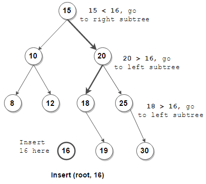

Binary Search Tree (BST)
New Module! Check BST to Grater Sum Tree!

Binary Search Tree (BST) is a node-based binary tree data structure which has the following properties:
- The left subtree of a node contains only nodes with keys lesser than the node’s key.
- The right subtree of a node contains only nodes with keys grater than the node’s key.
- The left and right subtree each must also be a binary search tree.

When looking for a place to insert a new key, traverse the tree from root-to-leaf, making comparisons to keys stored in the tree’s nodes and deciding based on the comparison to continue searching in the left or right subtrees. In other words, we examine the root and recursively insert the new node to the left subtree if its key is less than that of the root or the right subtree if its key is greater than or equal to the root. Here is an example of function insert in BST.
When looking for a place to insert a new key, traverse the tree from root-to-leaf, making comparisons to keys stored in the tree’s nodes and deciding based on the comparison to continue searching in the left or right subtrees. In other words, we examine the root and recursively insert the new node to the left subtree if its key is less than that of the root or the right subtree if its key is greater than or equal to the root. Here is an example of function insert in BST.
def insert(root, key):
if root is None: return Node(key)
if key < root.data:
root.left = insert(root.left, key)
else:
root.right = insert(root.right, key)
return root
Check out this leetcode problem --> 701. Insert into a Binary Search Tree
Lets say, you are given a sorted list/array of numbers. You have to construct a balanced BST from it.
What is a Balanced Binary Tree?
Problem: Adding data to a regular Binary Search Tree (BST) can be slow in the worst case. If you add data in order (ascending or descending), the tree becomes unbalanced and searching for things takes longer.
Solution: We want a Hight Balanced BST, where the tree's depth grows slowly (like a log) even with lots of data. This makes searching much faster.
How to achieve it:
For example, lets say we have the array
Now we take the mid element
Now we again take the mid element of the left subtree and make that the left node of the current root.
Time Complexity O(nlog(n))
Problem: Adding data to a regular Binary Search Tree (BST) can be slow in the worst case. If you add data in order (ascending or descending), the tree becomes unbalanced and searching for things takes longer.
Solution: We want a Hight Balanced BST, where the tree's depth grows slowly (like a log) even with lots of data. This makes searching much faster.
How to achieve it:
-
Sort the data first:
This ensures the tree structure is balanced from the start, meaning it won't be lopsided and searching will be faster.
-
Pick the middle element:
This element becomes the
rootof the tree. It's like the main trunk from which all other branches grow. -
Add smaller elements to the left:
These elements are less than the root, so they go in the
left subtree. Think of it as the left side of the family tree. -
Add larger elements to the right:
These elements are more than the root, so they go in the
right subtree. It's like the right side of the family tree. -
Repeat steps 2-4 for each subtree:
Keep dividing the remaining data and building subtrees based on their values compared to the parent node. Imagine splitting the family tree branches further for each new generation.
For example, lets say we have the array
keys = [15, 10, 20, 8, 12, 16, 25]. After sorting the array, we get [8, 10, 12, 15, 16, 20, 25]. Now we take the mid element
15 and split the array into two subarrays [8, 10, 12] and [16, 20, 25]. Now we again take the mid element of the left subtree and make that the left node of the current root.
15
/ \
10 (same as the left sub-tree)
/ \
8 12
By repeating this process, we can construct the balanced BST. Time Complexity O(nlog(n))
def Balanced_BST(keys, low, high, root):
if low > high: return root
mid = (low + high) // 2
root = Node(keys[mid])
root.left = Balanced_BST(keys, low, mid-1, root.left)
root.right = Balanced_BST(keys, mid+1, high, root.right)
return root
Check out this leetcode problem --> 108. Convert Sorted Array to Binary Search Tree
Inorder Traversal
- Visits nodes in the order: left subtree, root, right subtree.
- In a BST, inorder traversal lists nodes in ascending order.
Uses:
- Printing elements in ascending order.
- Validating a BST.
- Visits nodes in the order: root, left subtree, right subtree.
- Useful for copying a BST or creating a preorder index.
Uses:
- Creating a copy of a BST.
- Building a preorder index.
- Visits nodes in the order: left subtree, right subtree, root.
- Often used for deleting a BST or calculating its height.
Uses:
- Deleting a BST.
- Calculating the height of a BST.
Given a Binary Tree, the task is to convert the binary tree into its Mirror tree. Mirror of a Binary Tree T is another Binary Tree M(T) with left and right children of all non-leaf nodes interchanged.
We know in a BST, the left child of a node is always less than the node itself. And the right child of a node is always. So, we just need to take a temp variable and
Check out this leetcode problem --> 226. Invert Binary Tree
15 15
/ \ / \
10 18 (convert to) 18 10
\ /
12 12
Solution:
We know in a BST, the left child of a node is always less than the node itself. And the right child of a node is always. So, we just need to take a temp variable and
SWAP the left subtree and right subtree of the node. And we can do that for each and every node recursively by calling the function itself.
def mirror_BST(self, root):
if root is None: return None
temp = root.left
root.left = root.right
root.right = temp
self.invertTree(root.left)
self.invertTree(root.right)
return root
Check out this leetcode problem --> 226. Invert Binary Tree
Given the root of a Binary Search Tree (BST), convert it to a Greater Tree such that every key of the original BST is changed to the original key plus the sum of all keys greater than the original key in BST.

Solution:
Important Observation In BST, the left child of a node is always less than the node itself. And the right child of a node is always grater than the node itself. So, for a tree like this -
Let's just focus at this part of the tree. We are at the right most element of the tree. And we know that the right most element is the largest element in the tree.
Check out this leetcode problem --> 1038. Binary Search Tree to Greater Sum Tree
Solution:
Important Observation In BST, the left child of a node is always less than the node itself. And the right child of a node is always grater than the node itself. So, for a tree like this -
A
/ \
B C
The Order is always C > A > B
Let's just focus at this part of the tree. We are at the right most element of the tree. And we know that the right most element is the largest element in the tree.
\
6
/ \
5 7
\
8 <-- reached here
So as we can see, we need to add the sum of all the elements greater than the current node to the current node. And we are at the right most element of the tree. So, the current node value remains the same. Now, we need to go to the root of this current node, and add the value of the current node with the root (2nd largest) . So, 7 becoming (7 + 8) = 15.
\
6
/ \
5 15 (7+8) <-- here
\
8
As 15 (previously 7) has no left node, we now go to it's root (which is the 3rd largest) and add up the value of the current node with the root, so 6 becomes 15+6 = 21. And so on.
\
21 (6+15) <-- here
/ \
5 15
\
8
Important Observation What we're doing here is traversing the tree in such order - right -> root -> left. This is exactly opposit of the Inorder Traversal. So, we can solve this problem in this way,
-
Initialize accumulator: Create a variable
current_sumand set it to0. This will accumulate the sum of visited nodes. -
Define a recursive helper function: Define a function named
dfsthat takes arootnode as input.- Base case: Check if the
rootisNone. If so, simply return. - Process right subtree: Call
dfsrecursively on theroot.rightsubtree. This ensures processing larger values first. - Update node value: Add the current
current_sumto theroot.val. This effectively adds the sum of all larger nodes to the current node. - Update accumulator: Update the
current_sumby assigning the currentroot.valto it. This prepares the sum for the left subtree. - Process left subtree: Call
dfsrecursively on theroot.leftsubtree.
- Base case: Check if the
-
Start from root: Call the
dfsfunction with the initialrootof the binary search tree. -
Return modified tree: The function returns the modified
rootnode where each node now stores the sum of all larger nodes in the original tree.
Check out this leetcode problem --> 1038. Binary Search Tree to Greater Sum Tree